2020 and 2021. Although in 2020 and 2021 I started studying at the university, due to the covid-19 pandemic, we as IPTA students were asked to study online for a period of 2 years the said. Therefore, I do a part-time job, to allow me to have extra money. |
||
| 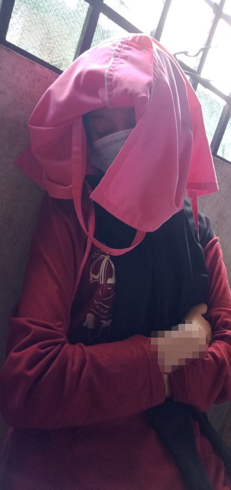 | 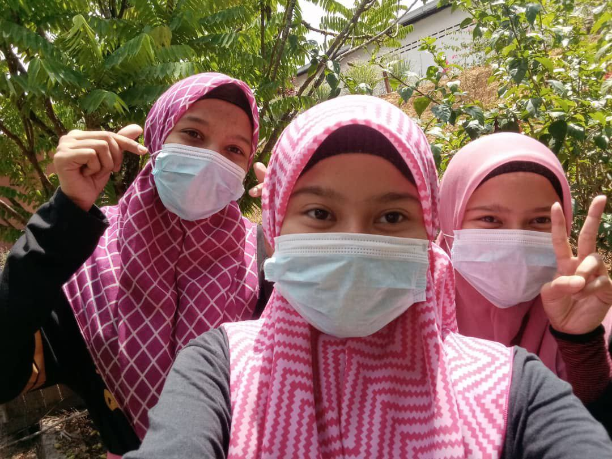 | 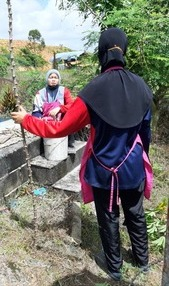 |

I will help my teacher 2 times a week because I have tasks and responsibilities as a student that must be fulfilled. We help to cheer up the area around the school while being able to strengthen relationships with each other. |
|||
| 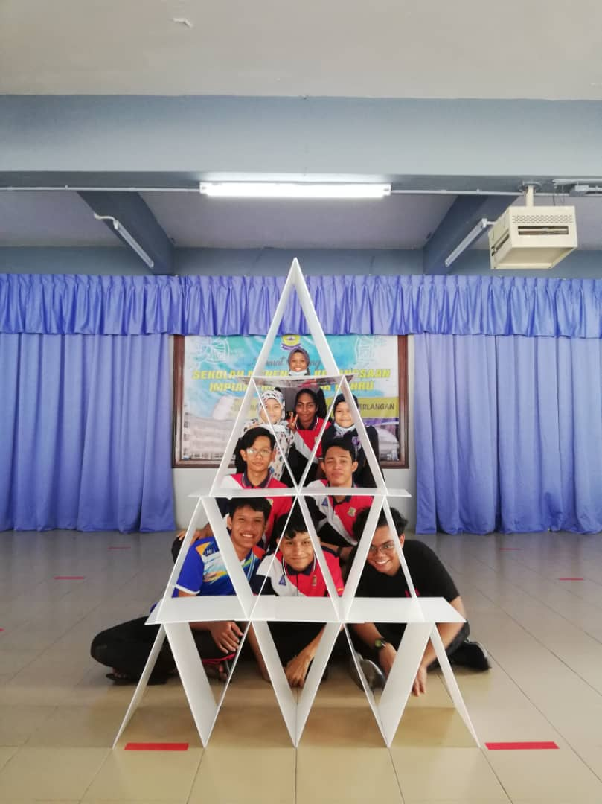 | 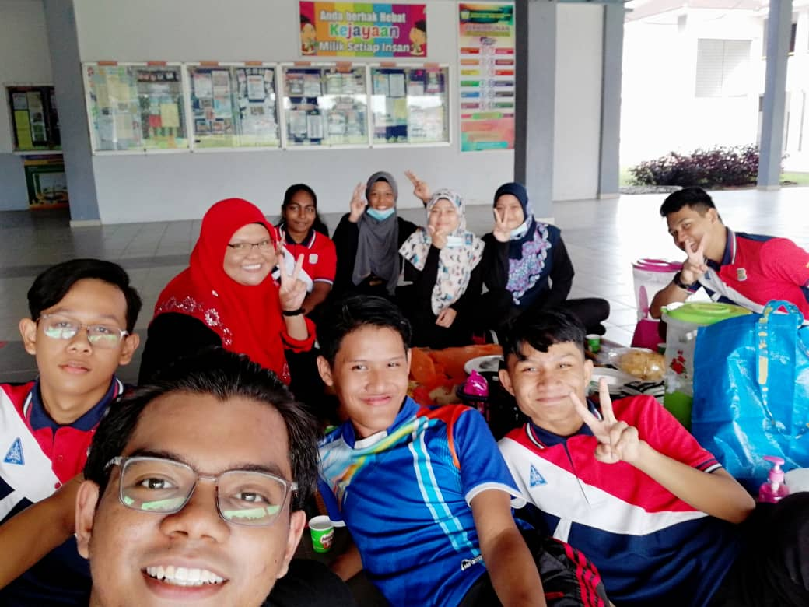 | 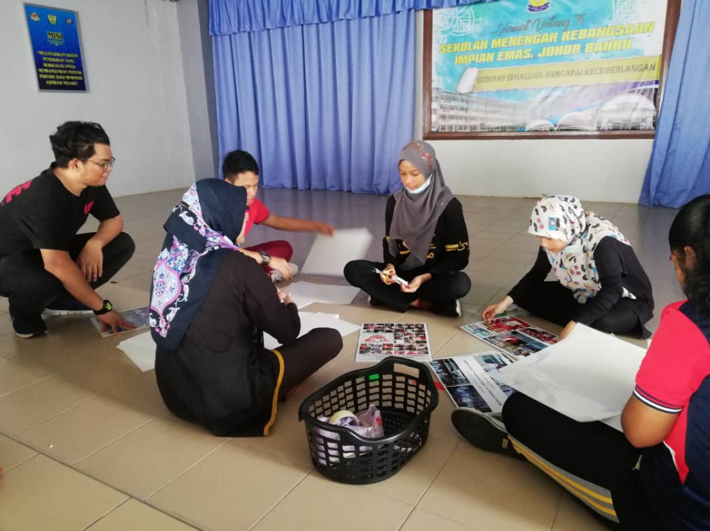 | 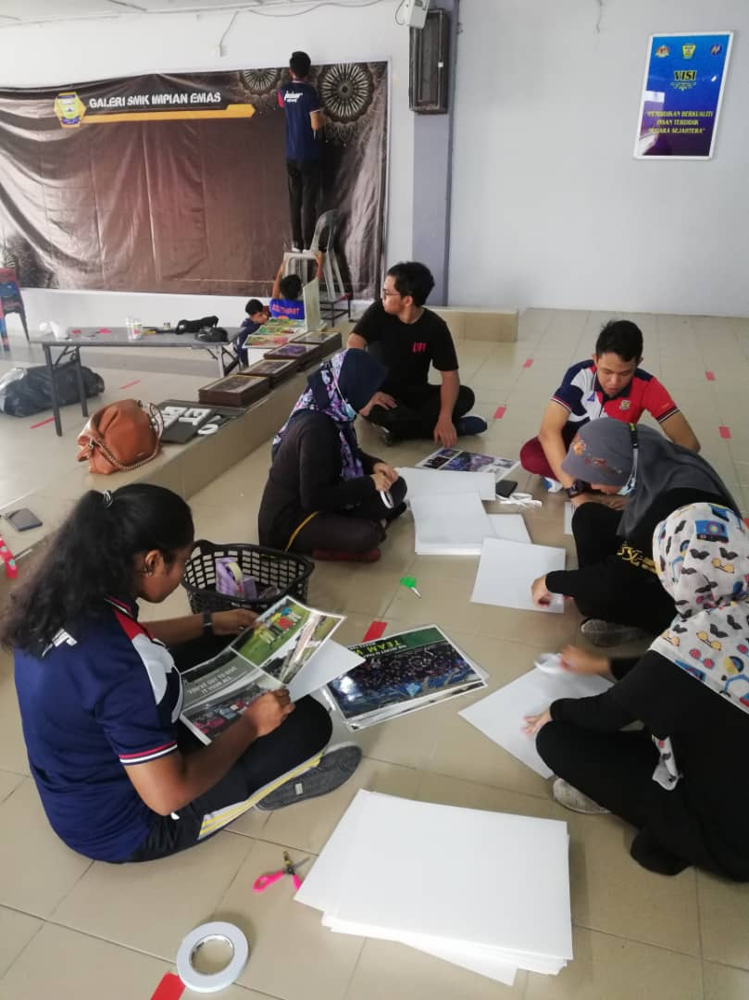 |
| 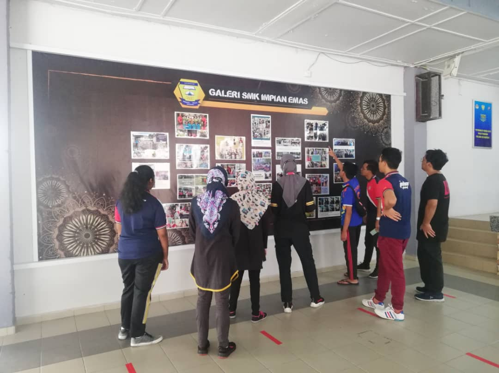 | 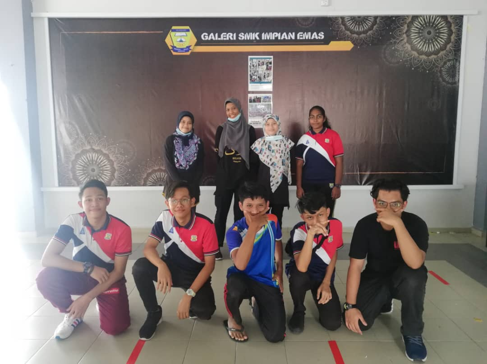 | ||
industrial training at this library, I learned many new things and experiences. In addition, I can also feel the atmosphere when I am in the world of work. |
|||
| 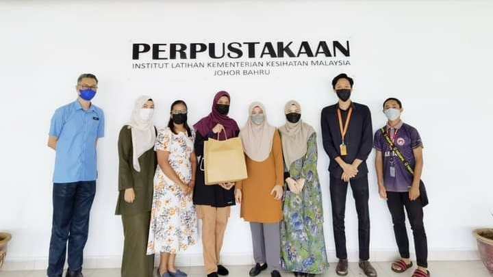 | 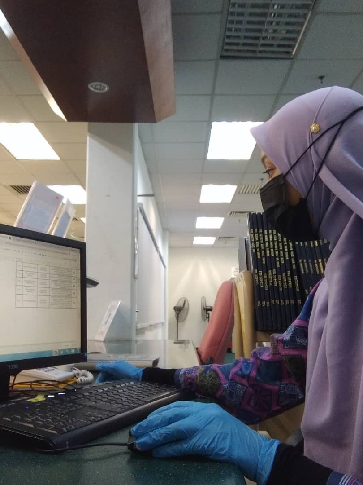 | 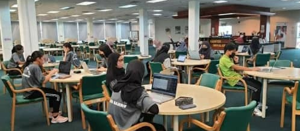 | |